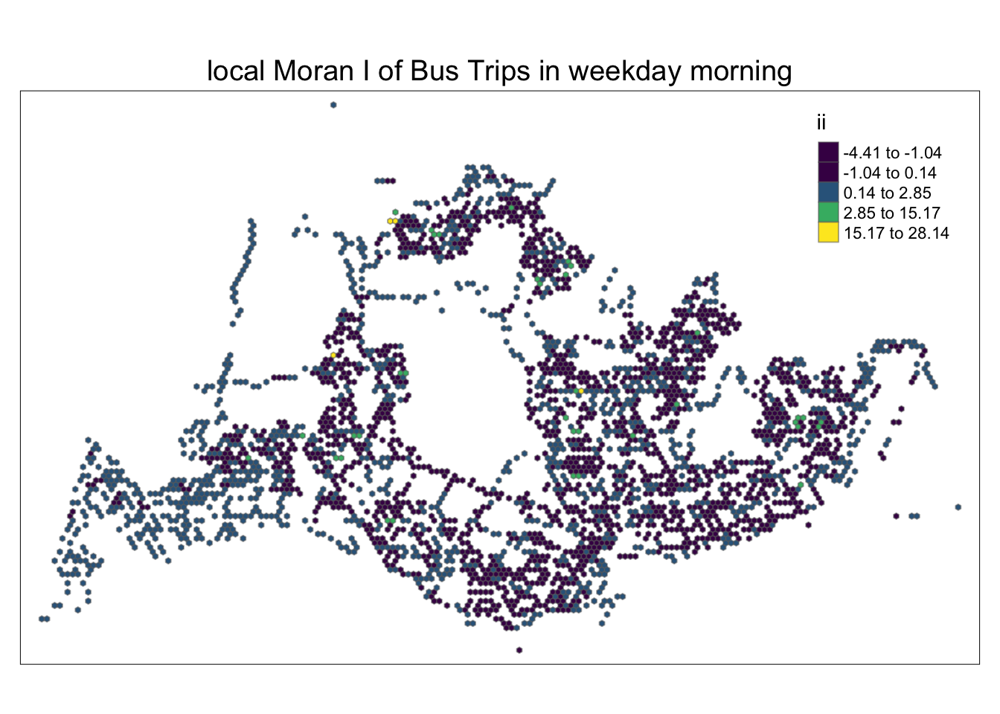
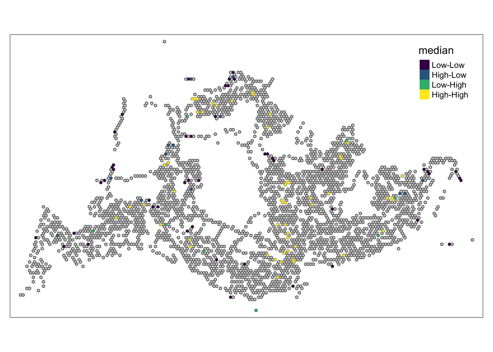

pacman::p_load(sf, sfdep, magrittr, tidyverse, tmap, knitr, RColorBrewer, viridis, dplyr)Take Home Exercise 1 - Geospatial Analytics for Public Good
1 OVERVIEW
As urban transportation and infrastructure become digitized, the resulting data sets can be used as a framework for crafting patterns of movement in space and time. These large amounts of motion data collected may contain structures and patterns that provide useful information about the characteristics of the measured phenomena. The identification, analysis and comparison of these patterns will provide deeper insights into how people move and behave within cities. These understandings will potentially contribute to better urban management and provide useful information to private and public sector urban transport service providers to make informed decisions to gain a competitive advantage.
1.1 Objectives and Methods
Exploratory Spatial Data Analysis (ESDA) hold tremendous potential to address complex problems facing society. In this study, you are tasked to apply appropriate Local Indicators of Spatial Association (GLISA) and Emerging Hot Spot Analysis (EHSA) to undercover the spatial and spatio-temporal mobility patterns of public bus passengers in Singapore.
This study mainly uses three methods：
Geovisualization and Analysis
With reference to the time intervals provided in the table below, compute the passenger trips generated by origin at the hexagon level,
Peak hour period Bus tap on time Weekday morning peak 6am to 9am Weekday afternoon peak 5pm to 8pm Weekend/holiday morning peak 11am to 2pm Weekend/holiday evening peak 4pm to 7pm Display the geographical distribution of the passenger trips by using appropriate geovisualization methods,
Describe the spatial patterns revealed by the geovisualization (not more than 200 words per visual).
Local Indicators of Spatial Association (LISA) Analysis
Compute LISA of the passengers trips generate by origin at hexagon level.
Display the LISA maps of the passengers trips generate by origin at hexagon level. The maps should only display the significant (i.e. p-value < 0.05)
With reference to the analysis results, draw statistical conclusions (not more than 200 words per visual).
Emerging Hot Spot Analysis(EHSA)
With reference to the passenger trips by origin at the hexagon level for the four time intervals given above:
Perform Mann-Kendall Test by using the spatio-temporal local Gi* values,
Prepared EHSA maps of the Gi* values of the passenger trips by origin at the hexagon level. The maps should only display the significant (i.e. p-value < 0.05).
With reference to the EHSA maps and data visualization prepared, describe the spatial patterns reveled. (not more than 250 words per cluster).
1.2 Study Area
The focus of this study will be Singapore. Singapore’s public transport system is renowned for its efficient, clean, safe and timely services. The city has a comprehensive digital public transportation network that is optimized through advanced information technology and big data analytics to improve operational efficiency and passenger experience.
Singapore’s urban infrastructure, such as utilities and roads, is also highly digitalized, using sensors, the Internet of Things (IoT) and other advanced technologies to monitor and manage city operations. For example, through vehicles equipped with GPS and RFID, traffic flows and patterns can be tracked, which helps in real-time traffic management and planning.
These digitalization measures enable Singapore to make important progress in improving the efficiency of public services, promoting sustainable development and enhancing the quality of life of residents.
2 GETTING STARTED
2.1 Setting the Analytical Tools
The code chunk below installs and loads sf, sfdep, magrittr, tidyverse, tmap, knitr, RColorBrewer, viridis packages into R environment. pacman() is a R package management tool.
2.2 Importing Data
We will import the data as a first step before proceeding with data cleaning, data wrangling and data exploration for the following:
Passenger Volume
PassengerVolume is an aspatial data, we can import the data simply by using the read_csv function from tidyverse package and output it as a tibble dataframe called odbus
odbus <- read_csv("data/aspatial/origin_destination_bus_202310.csv")Rows: 5694297 Columns: 7
── Column specification ────────────────────────────────────────────────────────
Delimiter: ","
chr (5): YEAR_MONTH, DAY_TYPE, PT_TYPE, ORIGIN_PT_CODE, DESTINATION_PT_CODE
dbl (2): TIME_PER_HOUR, TOTAL_TRIPS
ℹ Use `spec()` to retrieve the full column specification for this data.
ℹ Specify the column types or set `show_col_types = FALSE` to quiet this message.Bus Stop Location
Bus Stop is a geospatial data in .shp file. We save it as a sf data frame called busstop using the st_read function of the sf package. The data is then geo-referenced to coordinates from the Singapore SVY21 coordinate system (EPSG: 3414)
busstop <- st_read(dsn = "data/geospatial",
layer = "BusStop") %>%
st_transform(crs=3414)Reading layer `BusStop' from data source
`/Users/WangYuhui/Desktop/SMU/Special_Term/ISSS624-G1-Applied-Geospatial-Analytics/ISSS624/Take-Home_Exercise_1/data/geospatial'
using driver `ESRI Shapefile'
Simple feature collection with 5161 features and 3 fields
Geometry type: POINT
Dimension: XY
Bounding box: xmin: 3970.122 ymin: 26482.1 xmax: 48284.56 ymax: 52983.82
Projected CRS: SVY212.3 Data Wrangling
2.3.1 Passenger Volume
glimpse(odbus)Rows: 5,694,297
Columns: 7
$ YEAR_MONTH <chr> "2023-10", "2023-10", "2023-10", "2023-10", "2023-…
$ DAY_TYPE <chr> "WEEKENDS/HOLIDAY", "WEEKDAY", "WEEKENDS/HOLIDAY",…
$ TIME_PER_HOUR <dbl> 16, 16, 14, 14, 17, 17, 17, 7, 14, 14, 10, 20, 20,…
$ PT_TYPE <chr> "BUS", "BUS", "BUS", "BUS", "BUS", "BUS", "BUS", "…
$ ORIGIN_PT_CODE <chr> "04168", "04168", "80119", "80119", "44069", "2028…
$ DESTINATION_PT_CODE <chr> "10051", "10051", "90079", "90079", "17229", "2014…
$ TOTAL_TRIPS <dbl> 3, 5, 3, 5, 4, 1, 24, 2, 1, 7, 3, 2, 5, 1, 1, 1, 1…Since we plan to use the bus stop code as a unique identifier when joining with other datasets, change it to a factor data type.
odbus$ORIGIN_PT_CODE <- as.factor(odbus$ORIGIN_PT_CODE)
odbus$DESTINATION_PT_CODE <- as.factor(odbus$DESTINATION_PT_CODE)Checking for Duplicates and Missing Data
duplicate <- odbus %>%
group_by_all() %>%
filter(n()>1) %>%
ungroup()
duplicate# A tibble: 0 × 7
# ℹ 7 variables: YEAR_MONTH <chr>, DAY_TYPE <chr>, TIME_PER_HOUR <dbl>,
# PT_TYPE <chr>, ORIGIN_PT_CODE <fct>, DESTINATION_PT_CODE <fct>,
# TOTAL_TRIPS <dbl>summary(odbus) YEAR_MONTH DAY_TYPE TIME_PER_HOUR PT_TYPE
Length:5694297 Length:5694297 Min. : 0.00 Length:5694297
Class :character Class :character 1st Qu.:10.00 Class :character
Mode :character Mode :character Median :14.00 Mode :character
Mean :14.04
3rd Qu.:18.00
Max. :23.00
ORIGIN_PT_CODE DESTINATION_PT_CODE TOTAL_TRIPS
22009 : 17444 22009 : 17328 Min. : 1.00
84009 : 16842 84009 : 16808 1st Qu.: 2.00
52009 : 16734 52009 : 16253 Median : 4.00
75009 : 16610 75009 : 16143 Mean : 20.76
59009 : 14991 59009 : 15134 3rd Qu.: 12.00
46009 : 14642 46009 : 14167 Max. :36668.00
(Other):5597034 (Other):5598464 There is no missing data or duplicates.
2.4 Classify peak hours
According to the time interval specified in the task, calculate the passenger travel volume generated at the departure place. Passenger itineraries by origin are saved in 4 data frames according to their respective classifications, namely:
Weekday morning peak
Weekday afternoon peak
Weekend morning peak
Weekend evening peak
Save the processed data to a .rds data format file. Output files are saved in the rds subfolder. This is done to reduce load times and keep large raw files from being uploaded to GitHub.
Show the code
weekday_morning_peak <- odbus %>%
filter(DAY_TYPE == "WEEKDAY") %>%
filter(TIME_PER_HOUR >= 6 &
TIME_PER_HOUR <= 9) %>%
group_by(ORIGIN_PT_CODE) %>%
summarise(TRIPS = sum(TOTAL_TRIPS))
weekday_afternoon_peak <- odbus %>%
filter(DAY_TYPE == "WEEKDAY") %>%
filter(TIME_PER_HOUR >= 17 &
TIME_PER_HOUR <= 20) %>%
group_by(ORIGIN_PT_CODE) %>%
summarise(TRIPS = sum(TOTAL_TRIPS))
weekend_morning_peak <- odbus %>%
filter(DAY_TYPE == "WEEKENDS/HOLIDAY") %>%
filter(TIME_PER_HOUR >= 11 &
TIME_PER_HOUR <= 14) %>%
group_by(ORIGIN_PT_CODE) %>%
summarise(TRIPS = sum(TOTAL_TRIPS))
weekend_evening_peak <- odbus %>%
filter(DAY_TYPE == "WEEKENDS/HOLIDAY") %>%
filter(TIME_PER_HOUR >= 16 &
TIME_PER_HOUR <= 19) %>%
group_by(ORIGIN_PT_CODE) %>%
summarise(TRIPS = sum(TOTAL_TRIPS))
write_rds(weekday_morning_peak, "data/rds/weekday_morning_peak.rds")
weekday_morning_peak <- read_rds("data/rds/weekday_morning_peak.rds")
write_rds(weekday_afternoon_peak, "data/rds/weekday_afternoon_peak.rds")
weekday_afternoon_peak <- read_rds("data/rds/weekday_afternoon_peak.rds")
write_rds(weekend_morning_peak, "data/rds/weekend_morning_peak.rds")
weekend_morning_peak <- read_rds("data/rds/weekend_morning_peak.rds")
write_rds(weekend_evening_peak, "data/rds/weekend_evening_peak.rds")
weekend_evening_peak <- read_rds("data/rds/weekend_evening_peak.rds")2.5 Creating Hexagon Data
Create Hexagon Dataset from busstop
hexagon = st_make_grid(busstop, c(250, 250), what = "polygons", square = FALSE)
hexagon_sf = st_sf(hexagon) %>%
mutate(grid_id = 1:length(lengths(hexagon)))Examine the Grid
hexagon_sf$coll <- lengths(st_intersects(hexagon_sf, busstop))
print(n_distinct(hexagon_sf$grid_id))[1] 22134print(sum(hexagon_sf$coll == 0))[1] 19003summary(hexagon_sf$coll) Min. 1st Qu. Median Mean 3rd Qu. Max.
0.0000 0.0000 0.0000 0.2332 0.0000 5.0000 There are 22134 grids and 19003 grids with zero bus stops, a max of 5 bus stops per grid.
Delete hexagonal data with zero bus stops
hexagon_sf = filter(hexagon_sf, coll > 0)
write_rds(hexagon_sf, "data/rds/hexagon_sf.rds")
hexagon_sf <- read_rds("data/rds/hexagon_sf.rds")2.6 Visualizing
Show the code
tmap_mode("plot")tmap mode set to plottingShow the code
map_busstopcounts = tm_shape(hexagon_sf) +
tm_fill(
col = "coll",
palette = c("grey",rev(viridis(6))),
breaks = c(0, 1, 2, 3, 4, 5),
title = "Number of Bus Stops",
id = "grid_id",
showNA = FALSE,
alpha = 1,
popup.vars = c(
"Number of collisions: " = "coll"
),
popup.format = list(
coll = list(format = "f", digits = 0)
)
) +
tm_borders(col = "black", lwd = 0.2)
map_busstopcountsFrom the picture we can see:
There is no bus station in the central area, probably because there is a reservoir.
There are very few bus stops in the northwest, probably because there is a farm.
2.7 Combining the Data
Show the code
# Define a function to merge and summarize data
merge_and_summarize <- function(time_peak_data, busstop_hexagon, hexagon_sf) {
join_list <- left_join(time_peak_data, busstop_hexagon, by = c("ORIGIN_PT_CODE" = "BUS_STOP_N")) %>%
rename(ORIGIN_BS = ORIGIN_PT_CODE, ORIGIN_GRID = grid_id) %>%
group_by(ORIGIN_GRID) %>%
summarise(TOT_TRIPS = sum(TRIPS))
join_geometry <- left_join(hexagon_sf, join_list, by = c("grid_id" = "ORIGIN_GRID"))
return(join_geometry)
}
# List to store different time period data
time_peaks <- list(
weekday_morning_peak,
weekday_afternoon_peak,
weekend_morning_peak,
weekend_evening_peak
)
# Merge bus stop and hexagonal grid
busstop_hexagon <- st_intersection(busstop, hexagon_sf) %>%
select(BUS_STOP_N, grid_id) %>%
st_drop_geometryWarning: attribute variables are assumed to be spatially constant throughout
all geometriesShow the code
# Apply the function to each time period
results <- lapply(time_peaks, function(data) merge_and_summarize(data, busstop_hexagon, hexagon_sf))
# Save the results in RDS format
file_names <- c("weekday_morning_peak_join_geometry.rds",
"weekday_afternoon_peak_join_geometry.rds",
"weekend_morning_peak_join_geometry.rds",
"weekend_evening_peak_join_geometry.rds")
for (i in seq_along(results)) {
write_rds(results[[i]], paste0("data/rds/", file_names[i]))
}3. Exploratory Data Analysis (EDA)
3.1 Distribution of total trips and trips per bus stop
Show the code
rds_path <- "data/rds/"
weekday_morning_peak_join_geometry <- readRDS(paste0(rds_path, "weekday_morning_peak_join_geometry.rds"))
weekday_afternoon_peak_join_geometry <- readRDS(paste0(rds_path, "weekday_afternoon_peak_join_geometry.rds"))
weekend_morning_peak_join_geometry <- readRDS(paste0(rds_path, "weekend_morning_peak_join_geometry.rds"))
weekend_evening_peak_join_geometry <- readRDS(paste0(rds_path, "weekend_evening_peak_join_geometry.rds"))
combined_data <- bind_rows(
weekday_morning_peak_join_geometry %>% mutate(period = "Weekday Morning Peak"),
weekday_afternoon_peak_join_geometry %>% mutate(period = "Weekday Afternoon Peak"),
weekend_morning_peak_join_geometry %>% mutate(period = "Weekend Morning Peak"),
weekend_evening_peak_join_geometry %>% mutate(period = "Weekend Evening Peak")
)
# Plot combined data
ggplot(data = combined_data,
aes(x = as.numeric(`TOT_TRIPS`))) +
geom_histogram(bins = 20,
color = "blue",
fill = "blue") +
facet_wrap(~period, scales = "free_y") +
labs(title = "Distribution of Passenger Trips during Different Time Periods",
x = "Total Trips",
y = "Frequency")Warning: Removed 337 rows containing non-finite values (`stat_bin()`).Show the code
library(ggplot2)
combined_dsitribution <- combined_data %>%
mutate(`trips_per_busstop` = (`TOT_TRIPS` / coll))
ggplot(data = combined_dsitribution, aes(x = as.numeric(`trips_per_busstop`))) +
geom_histogram(bins = 20, color = "blue", fill = "blue") +
facet_wrap(~period, scales = "free_y") +
labs(title = "Distribution of Passenger Trips during Different Time Periods",
x = "Total Trips Per BusStop",
y = "Frequency") +
theme_minimal() Warning: Removed 337 rows containing non-finite values (`stat_bin()`).3.2 Distribution Across 4 Time Periods
Show the code
ggplot(combined_data, aes(x = factor(period), y = TOT_TRIPS)) +
geom_bar(stat = "identity", position = "dodge", fill = "blue") +
labs(title = "Distribution Across 4 Time Periods",
x = "Time Period",
y = "Total Trips") +
theme_minimal() +
theme(axis.text.x = element_text(angle = 45, hjust = 1),
legend.position = "none")Warning: Removed 337 rows containing missing values (`geom_bar()`).Through the above analysis, it is found that the number of trips during the morning peak on weekdays is the largest, followed by the afternoon peak on weekdays, the morning peak on weekends, and finally the evening peak on weekends.
Public transportation authorities can use this information to better allocate personnel and public transportation resources.
4. Geovisualization and Analysis
Quantile classification proved to provide little value due to the use of hexagonal tiles and the right-skewed distribution of the data. kmeans classification effect is better.
Show the code
tmap_mode("plot")tmap mode set to plottingShow the code
tmap_options(check.and.fix = TRUE)
create_tmap <- function(data, title) {
tm_shape(data) +
tm_fill("TOT_TRIPS",
style = "kmeans",
palette = c("grey", rev(viridis(6))),
title = "Passenger trips") +
tm_layout(main.title = title,
main.title.position = "center",
main.title.size = 1.2) +
tm_borders(alpha = 0.5) +
tm_scale_bar() +
tm_grid(alpha = 0.2) +
tmap_style("white")
}
maps <- list(
create_tmap(weekday_morning_peak_join_geometry, "Passenger trips during Weekday morning peak"),
create_tmap(weekday_afternoon_peak_join_geometry, "Passenger trips during Weekday afternoon peak"),
create_tmap(weekend_morning_peak_join_geometry, "Passenger trips during Weekend morning peak"),
create_tmap(weekend_evening_peak_join_geometry, "Passenger trips during Weekend evening peak")
)tmap style set to "white"other available styles are: "gray", "natural", "cobalt", "col_blind", "albatross", "beaver", "bw", "classic", "watercolor" tmap style set to "white"other available styles are: "gray", "natural", "cobalt", "col_blind", "albatross", "beaver", "bw", "classic", "watercolor" tmap style set to "white"other available styles are: "gray", "natural", "cobalt", "col_blind", "albatross", "beaver", "bw", "classic", "watercolor" tmap style set to "white"other available styles are: "gray", "natural", "cobalt", "col_blind", "albatross", "beaver", "bw", "classic", "watercolor" Show the code
maps[[1]]
[[2]]
[[3]]
[[4]]5. Local Indicators of Spatial Association (LISA) Analysis
5.1 Calculating adaptive distance weights
Because the minimum, median, mean, and 75th percentile are all 250 . Therefore we set k=1 when generating weights.
geo <- sf::st_geometry(hexagon_sf)
neighbour <- st_knn(geo, longlat = TRUE)! Polygon provided. Using point on surface.dists <- unlist(st_nb_dists(geo, neighbour))! Polygon provided. Using point on surface.summary(dists) Min. 1st Qu. Median Mean 3rd Qu. Max.
250.0 250.0 250.0 259.6 250.0 4250.0 Show the code
process_data <- function(data, hexagon) {
data %>%
mutate(TOT_TRIPS = replace_na(TOT_TRIPS, 0),
neighbour = st_knn(hexagon, k = 1),
wt = st_weights(neighbour, style = "W", allow_zero = TRUE),
.before = 1)
}
wm_q_1 <- process_data(weekday_morning_peak_join_geometry, hexagon)! Polygon provided. Using point on surface.Show the code
wm_q_2 <- process_data(weekday_afternoon_peak_join_geometry, hexagon)! Polygon provided. Using point on surface.Show the code
wm_q_3 <- process_data(weekend_morning_peak_join_geometry, hexagon)! Polygon provided. Using point on surface.Show the code
wm_q_4 <- process_data(weekend_evening_peak_join_geometry, hexagon)! Polygon provided. Using point on surface.5.2 Calculating local Moran’s I space autocorrelation statistics
The analysis focuses on the spatial autocorrelation of the variable TOT_TRIPS in each dataset, using the local_moran function for 99 simulations.
Moran’s I spatial autocorrelation statistic is calculated to evaluate whether nearby observations exhibit similar total travel values, revealing spatial patterns and clustering.
Show the code
compute_local_moran_I <- function(df) {
df %>%
mutate(local_moran = local_moran(TOT_TRIPS, neighbour, wt, nsim = 99), .before = 1) %>%
unnest(local_moran)
}
# List of data frames
wm_qs <- list(wm_q_1, wm_q_2, wm_q_3, wm_q_4)
# Apply the function to each data frame
lisa_results <- lapply(wm_qs, compute_local_moran_I)
lisa_1 <- lisa_results[[1]]
lisa_2 <- lisa_results[[2]]
lisa_3 <- lisa_results[[3]]
lisa_4 <- lisa_results[[4]]5.3 visualizing
In the following code chunk, a partitioned chart is created based on local Moran’s I values. Positive Local Moran’s I values indicate a feature’s membership in a cluster, while negative values indicate that the feature is an outlier. Areas in various shades of green indicate their membership in one or more clusters.
However, relying solely on the local Moran score is not sufficient to describe spatial clustering, as it cannot provide information about whether the total number of passengers’ trips is high or low and whether the test results are statistically significant. We need to continue analyzing only areas where total passenger trips have statistically significant values.
Show the code
tmap_mode("plot")tmap mode set to plottingShow the code
tm_shape(lisa_1) +
tm_fill("ii",
style = "kmeans",
palette = viridis(6)) +
tm_borders(alpha = 0.5) +
tm_layout(main.title = "local Moran I of Bus Trips in weekday morning",
main.title.size = 1.2, main.title.position = "center") +
tmap_style("white")tmap style set to "white"other available styles are: "gray", "natural", "cobalt", "col_blind", "albatross", "beaver", "bw", "classic", "watercolor" 
Show the code
tmap_mode("plot")tmap mode set to plottingShow the code
tm_shape(lisa_2) +
tm_fill("ii",
style = "kmeans",
palette = viridis(6)) +
tm_borders(alpha = 0.5) +
tm_layout(main.title = "local Moran I of Bus Trips in weekday afternoon",
main.title.size = 1.2, main.title.position = "center") +
tmap_style("white")tmap style set to "white"other available styles are: "gray", "natural", "cobalt", "col_blind", "albatross", "beaver", "bw", "classic", "watercolor" Show the code
tmap_mode("plot")tmap mode set to plottingShow the code
tm_shape(lisa_3) +
tm_fill("ii",
style = "kmeans",
palette = viridis(6)) +
tm_borders(alpha = 0.5) +
tm_layout(main.title = "local Moran I of Bus Trips in weekend morning",
main.title.size = 1.2, main.title.position = "center") +
tmap_style("white")tmap style set to "white"other available styles are: "gray", "natural", "cobalt", "col_blind", "albatross", "beaver", "bw", "classic", "watercolor" Show the code
tmap_mode("plot")tmap mode set to plottingShow the code
tm_shape(lisa_4) +
tm_fill("ii",
style = "kmeans",
palette = viridis(6)) +
tm_borders(alpha = 0.5) +
tm_layout(main.title = "local Moran I of Bus Trips in weekend afternoon",
main.title.size = 1.2, main.title.position = "center") +
tmap_style("white")tmap style set to "white"other available styles are: "gray", "natural", "cobalt", "col_blind", "albatross", "beaver", "bw", "classic", "watercolor" 5.4 visualizing p-value of local Moran’s I
In the following code chunk below, only statistically significant local Moran’s I values (p_ii_sim < 0.05) are visualized.
Show the code
tmap_mode("plot")tmap mode set to plottingShow the code
tm_shape(lisa_1) +
tm_fill("p_ii_sim",
palette = c(rev(viridis(6)), "white"),
breaks = c(0, 0.001, 0.01, 0.05, 1),
labels = c("0.001", "0.01", "0.05", "NA")) +
tm_borders(alpha = 0.2) +
tm_layout(main.title = "p-value of local Moran I in weekday morning",
main.title.size = 1.2,
main.title.position = "center" ) +
tmap_style("natural")tmap style set to "natural"other available styles are: "white", "gray", "cobalt", "col_blind", "albatross", "beaver", "bw", "classic", "watercolor" Show the code
tmap_mode("plot")tmap mode set to plottingShow the code
tm_shape(lisa_2) +
tm_fill("p_ii_sim",
palette = c(rev(viridis(6)), "white"),
breaks = c(0, 0.001, 0.01, 0.05, 1),
labels = c("0.001", "0.01", "0.05", "NA")) +
tm_borders(alpha = 0.2) +
tm_layout(main.title = "p-value of local Moran I in weekday afternoon",
main.title.size = 1.2,
main.title.position = "center") +
tmap_style("natural")tmap style set to "natural"other available styles are: "white", "gray", "cobalt", "col_blind", "albatross", "beaver", "bw", "classic", "watercolor" Show the code
tmap_mode("plot")tmap mode set to plottingShow the code
tm_shape(lisa_3) +
tm_fill("p_ii_sim",
palette = c(rev(viridis(6)), "white"),
breaks = c(0, 0.001, 0.01, 0.05, 1),
labels = c("0.001", "0.01", "0.05", "NA")) +
tm_borders(alpha = 0.2) +
tm_layout(main.title = "p-value of local Moran I in weekend morning",
main.title.size = 1.2,
main.title.position = "center") +
tmap_style("natural")tmap style set to "natural"other available styles are: "white", "gray", "cobalt", "col_blind", "albatross", "beaver", "bw", "classic", "watercolor" Show the code
tmap_mode("plot")tmap mode set to plottingShow the code
tm_shape(lisa_4) +
tm_fill("p_ii_sim",
palette = c(rev(viridis(6)), "white"),
breaks = c(0, 0.001, 0.01, 0.05, 1),
labels = c("0.001", "0.01", "0.05", "NA")) +
tm_borders(alpha = 0.2) +
tm_layout(main.title = "p-value of local Moran I in weekend afternoon",
main.title.size = 1.2,
main.title.position = "center") +
tmap_style("natural")tmap style set to "natural"other available styles are: "white", "gray", "cobalt", "col_blind", "albatross", "beaver", "bw", "classic", "watercolor" 5.5 Visualizing LISA map
In the following code chunk, LISA divides each region into four groups:
High - High means that a grid with a high number of initial trips is next to other grids with a high number of initial trips.
High-Low means grids with more initial trips are next to other grids with fewer initial trips
Low - Low means that a grid with a low number of initial strokes is next to other grids with a low number of initial strokes
Low-High means that grids with fewer initial trips are located next to other grids with more initial trips.
5.5.1 Weekday morning peak
Show the code
tmap_mode("plot")tmap mode set to plottingShow the code
lisa_sig <- lisa_1 %>%
filter(p_ii_sim < 0.05)
tmap_mode("plot")tmap mode set to plottingShow the code
tm_shape(lisa_1) +
tm_polygons() +
tm_borders(alpha = 0) +
tm_shape(lisa_sig) +
tm_fill("median",
palette = c(viridis(4))) +
tm_borders(alpha = 0)+
tmap_style("white")tmap style set to "white"other available styles are: "gray", "natural", "cobalt", "col_blind", "albatross", "beaver", "bw", "classic", "watercolor" Warning: One tm layer group has duplicated layer types, which are omitted. To
draw multiple layers of the same type, use multiple layer groups (i.e. specify
tm_shape prior to each of them).5.5.2 Weekday afternoon peak
Show the code
tmap_mode("plot")tmap mode set to plottingShow the code
lisa_sig <- lisa_2 %>%
filter(p_ii_sim < 0.05)
tmap_mode("plot")tmap mode set to plottingShow the code
tm_shape(lisa_1) +
tm_polygons() +
tm_borders(alpha = 0) +
tm_shape(lisa_sig) +
tm_fill("median",
palette = c(viridis(4))) +
tm_borders(alpha = 0)+
tmap_style("white")tmap style set to "white"other available styles are: "gray", "natural", "cobalt", "col_blind", "albatross", "beaver", "bw", "classic", "watercolor" Warning: One tm layer group has duplicated layer types, which are omitted. To
draw multiple layers of the same type, use multiple layer groups (i.e. specify
tm_shape prior to each of them).5.5.3 Weekend morning peak
Show the code
tmap_mode("plot")tmap mode set to plottingShow the code
lisa_sig <- lisa_3 %>%
filter(p_ii_sim < 0.05)
tmap_mode("plot")tmap mode set to plottingShow the code
tm_shape(lisa_1) +
tm_polygons() +
tm_borders(alpha = 0) +
tm_shape(lisa_sig) +
tm_fill("median",
palette = c(viridis(4))) +
tm_borders(alpha = 0)+
tmap_style("white")tmap style set to "white"other available styles are: "gray", "natural", "cobalt", "col_blind", "albatross", "beaver", "bw", "classic", "watercolor" Warning: One tm layer group has duplicated layer types, which are omitted. To
draw multiple layers of the same type, use multiple layer groups (i.e. specify
tm_shape prior to each of them).5.5.4 Weekend afternoon peak
Show the code
tmap_mode("plot")tmap mode set to plottingShow the code
lisa_sig <- lisa_4 %>%
filter(p_ii_sim < 0.05)
tmap_mode("plot")tmap mode set to plottingShow the code
tm_shape(lisa_1) +
tm_polygons() +
tm_borders(alpha = 0) +
tm_shape(lisa_sig) +
tm_fill("median",
palette = c(viridis(4))) +
tm_borders(alpha = 0)+
tmap_style("white")tmap style set to "white"other available styles are: "gray", "natural", "cobalt", "col_blind", "albatross", "beaver", "bw", "classic", "watercolor" Warning: One tm layer group has duplicated layer types, which are omitted. To
draw multiple layers of the same type, use multiple layer groups (i.e. specify
tm_shape prior to each of them).
5.6 Conclusion
High-High: In these areas, places with high travel demand are often close to each other, forming obvious travel hotspots. These hotspots may correspond to business centers, residential areas, or other places where activity is concentrated.
Low-Low: Areas with low travel demand are relatively scattered and do not form large continuous low-demand areas. These may be more remote or inaccessible areas.
High-Low: Represents areas adjacent to high travel areas but with low travel demand. This can happen at the edges of busy areas, or in areas where travel demand has dropped for specific reasons, such as transport planning or geographical constraints.
Low-High: Indicates that although some areas have low travel demand, they are close to areas with concentrated travel demand. This may be due to superior geographical location but underdevelopment.
As can be seen from the four pictures above, the High-Low and Low-High areas are mainly located in the northeast and south-central part, indicating that there is still room for improvement in the public transportation planning of these two areas.